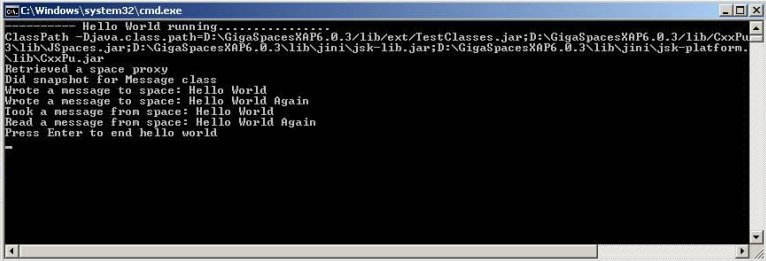
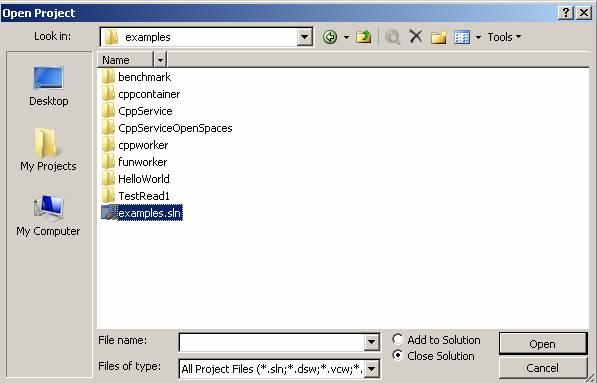
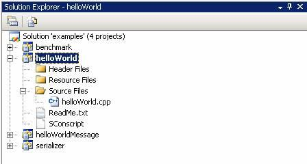
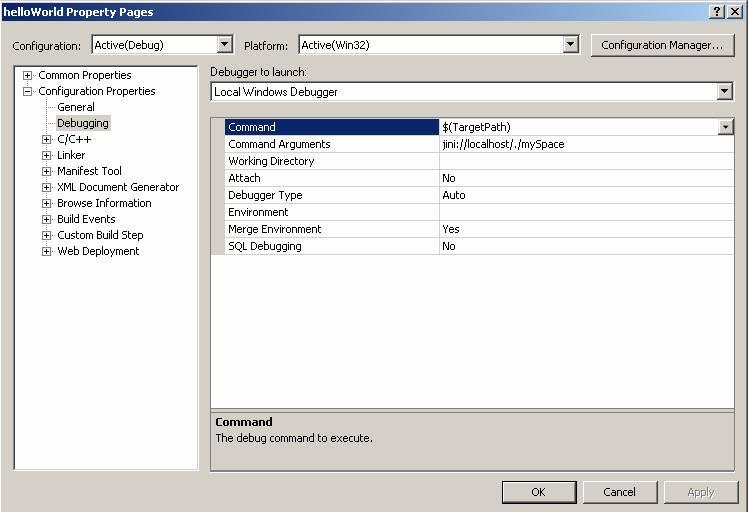
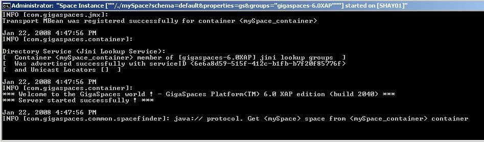
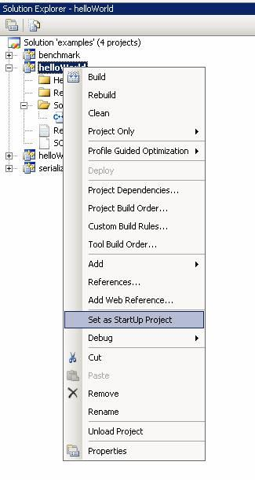
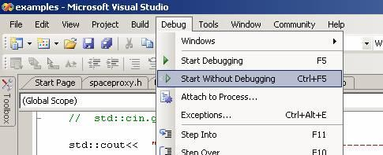
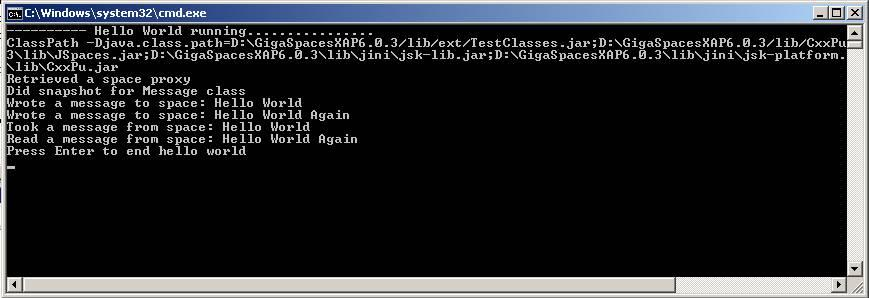

Section Summary: C++ environment setup and writing a Hello World C++ application.
Overview
The example below demonstrates interaction between a sample application and a space.
 The example source code can be found under: <GigaSpaces Root>\cpp\examples\HelloWorld.
The example source code can be found under: <GigaSpaces Root>\cpp\examples\HelloWorld.
 To learn about GigaSpaces C++ API, refer to the GigaSpaces C++ API section.
To learn about GigaSpaces C++ API, refer to the GigaSpaces C++ API section.
Building and Running the Example
Prerequisites
JAVA_HOME
The JAVA_HOME environment variable must be set to point to the appropriate JDK version.
 The JDK version must match the GigaSpaces version. GigaSpaces support JDK 1.5/1.6.
The JDK version must match the GigaSpaces version. GigaSpaces support JDK 1.5/1.6.
GigaSpaces Installation
GigaSpaces needs to be installed in your local directory. Make sure that this version matches the JDK version installed on your machine.
To verify the JVM version, run the following command: >java -version
For more details, refer to the Installing GigaSpaces section.
C++ API installation
See the Installing CPP API Package section.
Building and Running
You can build and run the application using the provided scripts or using the Visual Studio IDE.
Using Scripts
 <Example Root> below refers to the path: <GigaSpaces Root>\cpp\examples\HelloWorld.
<Example Root> below refers to the path: <GigaSpaces Root>\cpp\examples\HelloWorld.
- Compile the example by running: <Example Root>\bin\compile.sh/bat. You should run this script from the <Example Root>\bin directory.
- Execute <Example Root>\bin\startAll.sh/bat. This starts a light version of the server with one space instance, and the Jini Lookup Service.

If you want to start an embedded space, there is no need to perform this step.
Open <Example Root>\bin\run_HelloWorld.bat/.sh in a text editor, and replace jini:// with java://.
For example, in Windows:-
Replace:
"%JSHOMEDIR%\cpp\bin\%PLATFORM%\%COMPILER%\HelloWorld" jini://localhost/*/mySpace?groups=%LOOKUPGROUPS%
with:
"%JSHOMEDIR%\cpp\bin\%PLATFORM%\%COMPILER%\HelloWorld" java://localhost/./mySpace?groups=%LOOKUPGROUPS%
Changing the space URL protocol to Java causes the application to launch a space collocated in the same process, instead of connecting to a remote one.
Another way to activate the example with an embedded space is:"%JSHOMEDIR%\cpp\bin\%PLATFORM%\%COMPILER%\HelloWorld" /./mySpace?groups=%LOOKUPGROUPS%
- If you want to view the space in the GigaSpaces Browser, execute <GigaSpaces Root>\bin\gs-ui.sh/bat.
- To start the sample application, execute <Example Root>\bin\run_HelloWorld.sh/bat.
- This is what you should see:

Here is an example for a linux makefile:
CXXFLAGS = -fPIC -rdynamic -c -w -shared OBJS = HelloWorldMessage.o DEF = -DACE_AS_STATIC_LIBS -D__RENTRANT -DHAVE_CONFIG_H LIBS = "-L$(JSHOMEDIR)/cpp/lib/$(PLATFORM)/$(COMPILER)" \ "-L$(JSHOMEDIR)/cpp/open-source/platform-libs/$(PLATFORM)/$(COMPILER)" \ "-L$(JAVA_HOME)/jre/lib/amd64/server/" \ -lgscpplib -lACE -lxerces-c \ -lpthread \ -ldl \ -lnsl INCL = "-I$(JSHOMEDIR)/cpp/include"\ "-I$(JSHOMEDIR)/cpp/open-source/platform-includes/$(PLATFORM)"\ "-I$(JSHOMEDIR)/cpp/open-source/platform-independant-includes"\ "-I$(JSHOMEDIR)/cpp/examples/HelloWorld/serializer"\ %.o:%.cpp $(CC) $(CXXFLAGS) $(INCL) -c $< TARGET = "$(JSHOMEDIR)/lib/ServiceGrid/native/libHelloWorldMessage.so" $(TARGET): $(OBJS) g++ -shared -Wl $(INCL) -o $(TARGET) $(OBJS) $(LIBS) all: $(TARGET) clean: rm -f $(OBJS) $(TARGET)
| Debugging in Linux When debugging the code in Linux, you may receive the signal SIGSEGV (segmentation fault). It is recommended to instruct the debugger to ignore these signals ("handle SIGSEGV nostop noprint" in gdb, "ignore SIGSEGV" in most versions of dbx). |
Using Visual Studio
- Start Visual Studio using the <GigaSpaces Root>\cpp\GigaVisualStudio.bat script.
 You might need to edit this file (GigaVisualStudio.bat) and the file it calls (env.cmd) to include the correct values for the JAVA_HOME and JSHOMEDIR environment variables and the correct location of Visual Studio.
You might need to edit this file (GigaVisualStudio.bat) and the file it calls (env.cmd) to include the correct values for the JAVA_HOME and JSHOMEDIR environment variables and the correct location of Visual Studio.
- Once Visual Studio is started, open the examples solution <GigaSpaces Root>\cpp\examples\examples.sln:

- Make sure the Hello World project appears:

- Modify the Hello World project to have the following as the Command Arguments (java://localhost/./mySpace):

- Execute <Example Root>\bin\startAll.sh/bat. This starts a light version of the server with one space instance, and the Jini Lookup Service.
If you want to start an embedded space, there is no need to perform the last 2 steps. Running the Hello World example without any Command Arguments automatically launches a space collocated in the same process.

- Make sure that Hello World is the Startup Project:

- Make sure that Hello World is configured to run in the Release solution configuration mode.
- Rebuild the Hello World project.
- Run the Hello World Application:

- This is what you should see:

Environment Settings
The above scripts and the Visual Studio solution define several environment settings that are necessary to build and run the example. This section lists these settings. Choose the tab below that matches your platform.
Windows
Environment Variables
The following environment variables need to be defined:
- JSHOMEDIR – the <GigaSpaces Root> directory.
- PLATFORM – the build platform, in this case win32 or win64.
- COMPILER – the compiler used for building, for example: VS9.0.
For example:
set JSHOMEDIR=C:\gigaspaces-xap-8 set PLATFORM=win32 set COMPILER=VS9.0
In addition, the variable PATH should be updated to include:
%JSHOMEDIR%\cpp\lib\%PLATFORM%\%COMPILER%;%JSHOMEDIR%\cpp\bin\%PLATFORM%\%COMPILER%;%JAVA_HOME%\jre\bin\client
 You can also run the <GigaSpaces Root>\cpp\env.cmd file to define these variables to match your platform.
You can also run the <GigaSpaces Root>\cpp\env.cmd file to define these variables to match your platform.
Additional Include Directories
(Properties window -> Configuration Properties -> C/C++ -> General -> Additional Include Directories)
"$(JSHOMEDIR)\cpp\include"; "$(JSHOMEDIR)\cpp\open-source\platform-independant-includes"; "$(JSHOMEDIR)\cpp\open-source\platform-includes\$(PLATFORM)"; "$(JSHOMEDIR)\cpp\examples\helloWorld\serializer"
Additional Dependencies
(Properties window -> Configuration Properties -> Linker -> Input -> Additional Dependencies)
gscpplib.lib
Linux
Environment Variables
The following environment variables need to be defined:
- JSHOMEDIR – the <GigaSpaces Root> directory.
- PLATFORM – the build platform, in this case linux-amd64 or linux32.
- COMPILER – the compiler used for building, for example: gcc-4.1.2.
Example:
JSHOMEDIR=../../.. PLATFORM=linux-amd64 COMPILER=gcc-4.1.2
 You can also run the <GigaSpaces Root>\cpp\setenv.sh file to define these variables to match your platform.
You can also run the <GigaSpaces Root>\cpp\setenv.sh file to define these variables to match your platform.
Additional Include Paths
-I$(JSHOMEDIR)/cpp/include\ -I$(JSHOMEDIR)/cpp/open-source/platform-includes/$(PLATFORM)\ -I$(JSHOMEDIR)/cpp/open-source/platform-independant-includes\ -I$(JSHOMEDIR)/cpp/examples/HelloWorld\ -I$(JSHOMEDIR)/cpp/examples/HelloWorld/serializer\
Additional Libraries
Paths:
-L$(JSHOMEDIR)/cpp/lib/$(PLATFORM)/$(COMPILER) \ -L$(JSHOMEDIR)/cpp/open-source/platform-libs/$(PLATFORM)/$(COMPILER) \ -L$(JAVA_HOME)/jre/lib/amd64/server/
 The last path might differ from the example above, depending on your Java installation.
The last path might differ from the example above, depending on your Java installation.
Libraries:
-lgscpplib -lACE -lxerces-c -ljvm
Code Walkthrough
 <Example Root> in the text below refers to <GigaSpaces Root>/cpp/examples/HelloWorld.
<Example Root> in the text below refers to <GigaSpaces Root>/cpp/examples/HelloWorld.
This application is a simple client that connects to a remote space, writes a data object into that space and then reads it back. We start by defining the properties of this data object which we refer to as a Message.
Generating Message Class from gs.xml
The Message class used in the example contains only three fields: id (int), uid (string) and content (string). The uid field is used as a primary key, the id field is used for routing in a partitioned space, and the content field contains the message text.
The following XML code represents this Message object (located at <Example Root>\serializer\HelloWorld.gs.xml):
<?xml version="1.0" encoding="UTF-8"?> <!DOCTYPE gigaspaces-mapping SYSTEM "../../../config/cpp.dtd"> <gigaspaces-mapping> <class name="Message" persist="false" replicate="false" fifo="false" > <property name="id" type="int" null-value="-999" index="true"/> <routing name="id"/> <property name="uid" type="string" null-value="" index="true"/> <id name="uid" auto-generate="true" /> <property name="content" type="string" null-value="" index="false"/> </class> </gigaspaces-mapping>
 The id tag defines the uid field as the primary key, while the routing tag defines the id field used for routing. For more details, refer to the gs.xml reference section.
The id tag defines the uid field as the primary key, while the routing tag defines the id field used for routing. For more details, refer to the gs.xml reference section.
This XML file is used by the gsxml2cpp command that produces the HelloWorldMessage.h and HelloworldMessage.cpp files. This is performed by the following command:
gsxml2cpp ../serializer/helloWorld.gs.xml HelloWorld ../serializer/HelloWorldMessage.cpp ../serializer/HelloWorldMessage.h
HelloWorldMessage.h contains the class declaration and HelloworldMessage.cpp contains serialization code that shouldn't be edited. You can use an existing class instead of having it generated by gsxml2cpp. For more details, refer to the Writing Existing CPP Class to Space section for more details.
A shared library (DLL or SO file) is created from HelloWorldMessage.h/cpp files. This shared library is copied into the <Gigaspaces Root>\lib\ServiceGrid\native directory, so that it can be loaded at runtime by the space.
 Each entry class name must be unique over GigaSpaces installation.
Each entry class name must be unique over GigaSpaces installation.
Connecting to Space
In order to connect to the remote space, we call the find() method (which is a member of OpenSpaces::SpaceFinder), and pass a space URL:
SpaceProxyPtr space ( finder.find(spaceUrl) );
(The above is copied from the file: <Example Root>\HelloWorld.cpp.)
 The space URL in this example is: jini://localhost/*/mySpace?groups=javaspaces-hellospace. It is passed to main in run_HelloWorld.sh/.bat) (see Space URL).
The space URL in this example is: jini://localhost/*/mySpace?groups=javaspaces-hellospace. It is passed to main in run_HelloWorld.sh/.bat) (see Space URL).
 This space URL specifies the network address of the Jini Lookup Service (localhost here), and queries it for a space belonging to the lookup group javaspaces-hellospace. There is only one space in this lookup group: the space instance started by startAll.sh. The space is purposely started with a switch that registers it to this lookup group (see Using the Examples, Server Side section).
This space URL specifies the network address of the Jini Lookup Service (localhost here), and queries it for a space belonging to the lookup group javaspaces-hellospace. There is only one space in this lookup group: the space instance started by startAll.sh. The space is purposely started with a switch that registers it to this lookup group (see Using the Examples, Server Side section).
The asterisk after localhost represents the space container (a logical unit inside the server); this URL does not refer to a specific container. Note that the protocol used is Jini (other protocols are RMI and Java. Java is used for embedded spaces and to launch spaces on the server side).
Registering C++ Class to Space
The space must know about the data class that we declared previously. Thus, we need to register it to the space in the following way:
Message messageTemplate; space->snapshot(&messageTemplate);
Writing Object to Space
The application constructs an object called msg and writes it to the space by passing it as the first argument in the SpaceProxy::write() method. The second argument refers to the transaction object – none in this example, the third defines the lease time.
Message_ptr msg( new Message() ); msg->id = 1; msg->content = "Hello World"; space->write(msg.get(), NULL_TX, 5000000);
(The above is copied from the file: <Example Root>\HelloWorld.cpp.)
The msg object is of type Message. This is a class that satisfies the requirements of the space: it implements OpenSpaces::IEntry, has a default constructor, and a virtual function that returns the class space name.
class Message: public IEntry { public: Message() { content = ""; id = -999; uid = ""; } std::string content; int id; std::string uid; virtual const char* GetSpaceClassName() const { return "Message"; } };
(The above is copied from the file: <Example Root>\serializer\HelloWorldMessage.h – the header generated by gsxml2cpp.)
Creating Template
The application creates an object, referred to as a template. This object is essentially the filter criteria used to query the space for matching objects. The template must be of a registered type, in this case, an object of type Message. This template has all attributes as null, which tells the space to return an object of type Message, regardless of its attribute values (if there are multiple objects matching the template, the space returns one of them).
Message messageTemplate;
(The above is copied from the file: <Example Root>\HelloWorld.cpp.)
If you want to perform more specific template matching, assign specific values to the template object's attributes.
If you set template.attribute1="value", the space returns an object of this class for which attribute equals to the value. When using a regular template, you can perform equality queries with AND conditions. For bigger/less-than queries or ranges, or more complex queries using OR conditions; use the SQLQuery class.
For more details on SQL queries, refer to the SQLQuery section.
You can use the inheritance mechanism to match derived object-enabling queries in different level of abstraction.
Passing Template to Space
The template is passed to the space in the first argument of the SpaceProxy::read() method. The second argument defines a transaction.
The third argument defines the wait time (block time) for read operations. This argument is set to 0, meaning no wait. In this example, since we have written a matching object to the space prior the read operation, the application returns immediately with the desired object data, so the wait time is unimportant. But in real life, applications often read data that was supposed to be written or updated by other applications – in which case the block time represents the period during which the data is expected to enter the space. If the block time is long, the application might block for a long time, waiting for the object to appear.
Message_ptr result ( space->read(&messageTemplate, NULL_TX, 0) );
(The above is copied from the file: <Example Root>\HelloWorld.cpp.)
Receiving Returned Message Object
In this example, the read() method returns the requested Message object (because it is written previously by the same application), and the application displays its content. If the object does not exist, the application returns immediately with a NULL value.
Alternatively, you can perform the read operation with a timeout. The application returns NULL in case a matching object has not been written to the space during the specified timeout.